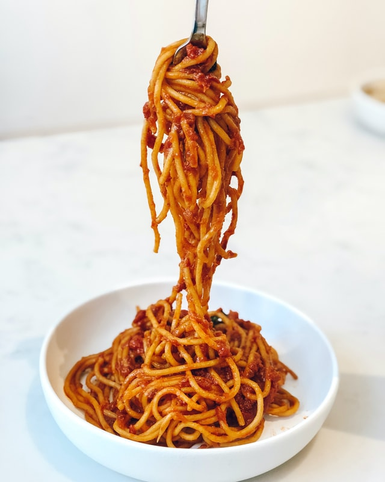

Spaghetti

Delicious bowl of spaghetti
The popularity of spaghetti spread throughout Italy after the establishment of spaghetti factories in the 19th century, enabling the mass production of spaghetti for the Italian market.
Ingredients
- Ground beef
- 1 onion
- Garlic
- 1 can of diced tomatoes
- Tomato paste
- Oregano
- Salt and pepper
Steps
- Combine ground beef, onion, garlic, and green pepper in a large saucepan over medium-high heat. Cook and stir until meat is browned and crumbly and vegetables are tender, 5 to 7 minutes. Drain grease.
- Stir diced tomatoes, tomato sauce, and tomato paste into the pan. Season with oregano, basil, salt, and pepper. Simmer spaghetti sauce for 1 hour, stirring occasionally.